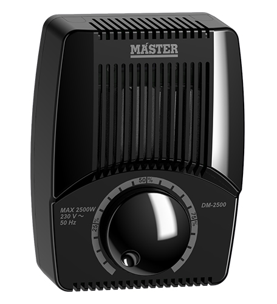
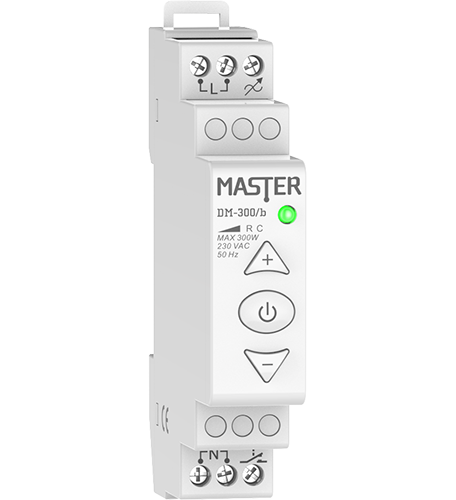
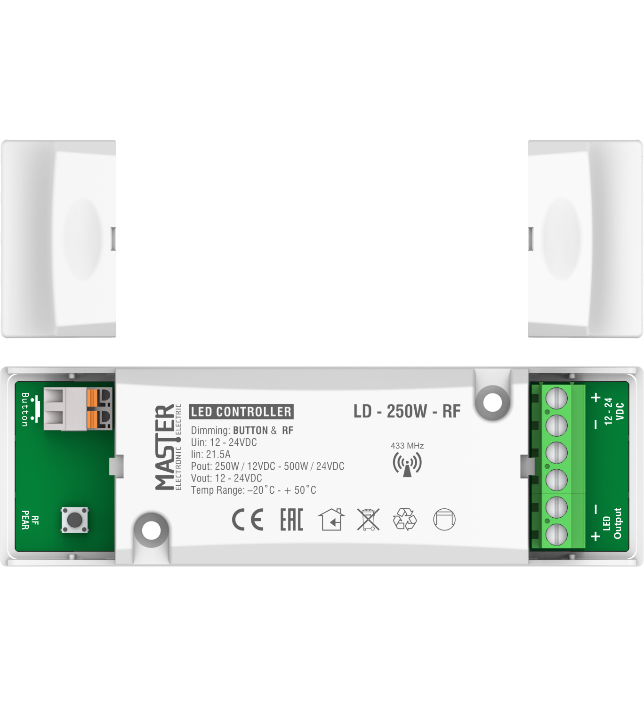
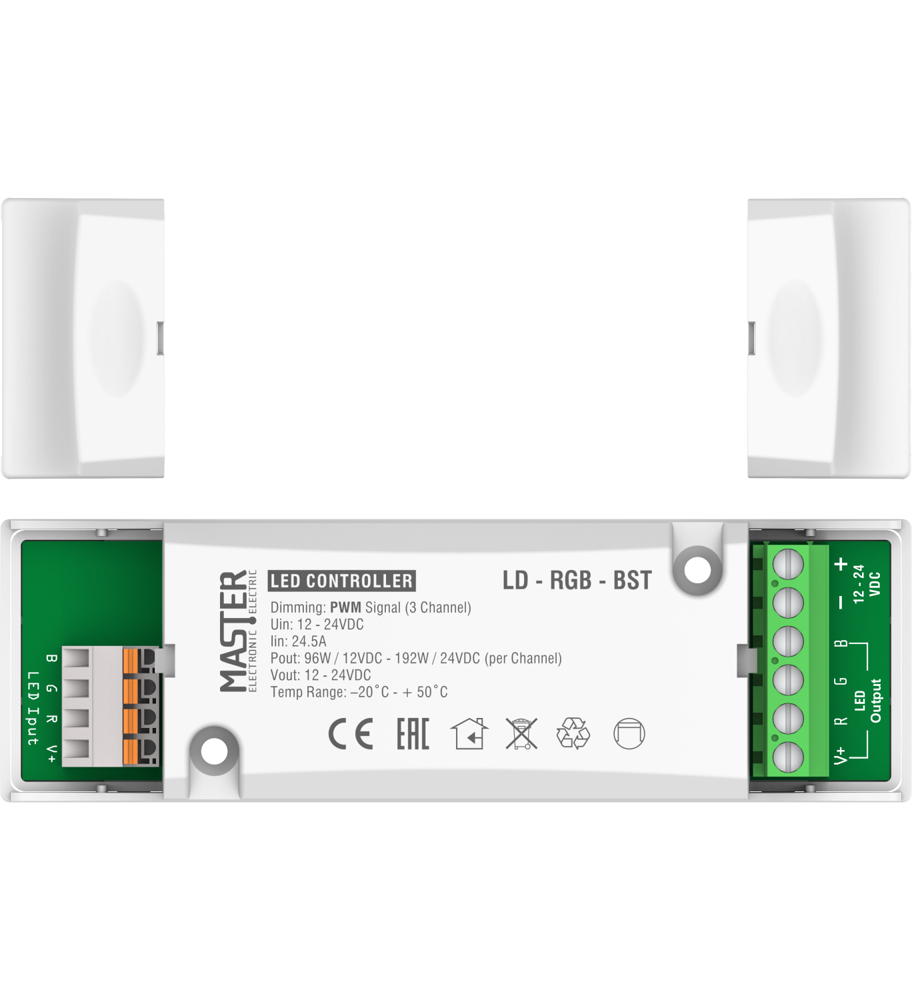
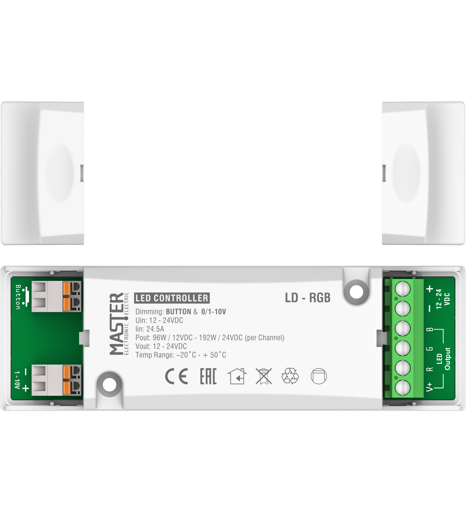

Partners
On our website, visitors can find about new products and all of the latest information of our activities
Know moreIddero is a manufacturer of high quality, innovative products for home and building automation based on the KNX standard.
Know moreOur Products
Wall-Mounting Dimmer
- DM-400L/N
DM-400L/N
The DM-400L/N (Dimmer) is an innovative digital technology product (Phase-cut) with switchable Leading Edge - Trailing Edge operation.
It fully meets the needs of light intensity adjustment and energy saving, especially when using alternative LED Filament, LED Dimmable, CFL, Halogen lamps and Dimmable Drivers.
It is an absolutely safe, reliable, and aesthetically elegant product made with special state-of-the-art integrated circuits and durable plastic parts for challenging operating and usage conditions.
Its operation locally from the device and remotely from one or more parallel-connected push buttons of any type and manufacturer makes it unique.Technical Specifications
- LIGHTING CONTROLLER: Digital (IGBT) - LED / 1 Channel
- OPERATING VOLTAGE: 180 – 230V AC
- OPERATING FREQUENCY: 50Hz
- OUTPUT POWER: 400W (max)
- STANDBY POWER CONSUMPTION: ≦ 1 Watt
- OPERATION: Soft Start
- OPERATION (Phase-Cut): Leading – Trailing Edge (Operation mode switching with extended 6 sec button press)
- MOUNTING: In switch box with 40mm depth
- SAFETY: Electronic protection against overvoltage and overheating with automatic reset to operating state.
- TEMPERATURE CONDITIONS: Operating temperature -20°C to +50°C Storage temperature -20°C to +60°C
- WIRE SIZE: ∅1mm to ∅2.5mm
- DM -1000WWall Mounting Dimmer multi 1000W.
DM - 1000W
DM - 1000W wall mounting dimmer wasdesigned to cover the needs on lighting and ventilation control on house and partly professional fields. It is an absolutely safe, reliable and good looking product manufactured with special integrated circuits and good quality, resistant plastic parts for cases of function and use under adverse conditions, equipped with one of the best antiparasitic systems.
Control: DM - 1000W wall mounting dimmer is equipped with a rotary potentiometer (for lighting intensity increase/decrease) with embedded button (ON – OFF) for its function to activate and deactivate.
Lower level setting: DM – 1000W has the ability to adjust the minimum level of output power so that it can be used to control electric single phase motors, in which it is essential to prevent the dimmer from delivering less power than it is necessary to turn the motor on. This specific procedure is succeeded by adjusting a potentiometer which is found on the product’s side.
Technical Specifications
- Dimmer : MULTI - ALLERETOUR
- Function : Soft Start
- Operating Voltage : 180 – 230V AC
- Power Line Frequency : 50Hz
- Power : 1000 Watt
- CONTROL LOAD :
- Halogen lamps
- Resistive Magnetic transformers
- Electronic transformers
- Electric single-phase motors :
1. Universal
2. asynchronous with torque strongly depended from motor speed (centrifugal pumps, fans, ventilations etc). - ENVIRONMENT TEMPERATURE: -20°C until +50°C
- FUSE: 6 A / 230VAC (for short-circuit protection)
- WIRE SIZE: From 0.5 mm to 3.5 mm
- MOUNTING: Electrical switch box
- EUROPEAN COMMUNITY DIRECTIVES:
- The product complies with directives:
Low Voltage Directive: 2014/55/EU
EMC Directive: 2014/30/EU
EN 60669-1
EN 60669-2-1
Surface-Mounting Dimmer
- DM-2500WDimmer Professional Multi-led 2500W.
DM-2500W
Dimmer DM - 2500 was designed to cover the needs of professional stores on basic sections oflighting and ventilation. It is an absolutely safe to use and reliable product as it isconstructed with special integrated circuits and tough plastic so it can function under adverse conditions.
Control : Dimmer DM - 2500 is controlled by a a rotary potentiometer which controls the current and the power consumption to the desired level from 1% to 100%. The is also an embedded switch in the potentiometer (press switch) to activate and deactivate the device.
Lower level setting : As it is mentioned at the technical characteristics topic, DM - 2500 has the ability to adjust the minimum level of output power so that it can be used to control electric single phase motors, in which it is essential to prevent the dimmer from delivering less power than it is necessary to turn the motor on. This specific procedure is succeeded by adjusting a potentiometer which is found inside the product.
1st Step: Set the main potentiometer at lowest setting.
2nd Step: Meanwhile, remove the mask of the device (DM - 2500) and then set the potentiometer which is inside the dimmer (ADJ) to the lowest allowed desired limit.
3rd Step: Repeat the same procedure in order to reset the lowest limit.
Technical Specifications
- DIMMER: Electronic - digital
- OPERATING VOLTAGE: 180 - 230 V - AC
- OPERATING FREQUENCY: 50Hz
- MAXIMUM OUTPUT POWER: 2500 Watt
- CONTROL LOAD:
- RESISTIVE & HALOGEN
- INDUCTIVE TRANSFORMERS
- ELECTRONIC TRANSFORMERS
- LED
- ELECTRIC SINGLE - PHASE MOTORS:
- 1. Universal
- 2. Asynchronous with torque strongly depended from motor speed (centrifugal pumps, fans, ventilations).
- ENVIRONMENTTEMPERATURE:-20°C until +50°C
- FUSE: 15 A / 230VAC (for short-circuit protection)
- WIRE SIZE: From 0.5 mm to 3.5 mm
- FIXING: Surface-mounting
- EUROPEAN COMMUNITY DIRECTIVES:
- The product complies with directives:
Low Voltage Directive: 2014/55/EU
EMC Directive: 2014/30/EU
EN 60669-1
EN 60669-2-1
- DM-2500Dimmer Professional Multi-led 2500W.
DM-2500
Dimmer DM - 2500 was designed to cover the needs of professional stores on basic sections oflighting and ventilation. It is an absolutely safe to use and reliable product as it isconstructed with special integrated circuits and tough plastic so it can function under adverse conditions.
Control : Dimmer DM - 2500 is controlled by a a rotary potentiometer which controls the current and the power consumption to the desired level from 1% to 100%. The is also an embedded switch in the potentiometer (press switch) to activate and deactivate the device.
Lower level setting : As it is mentioned at the technical characteristics topic, DM - 2500 has the ability to adjust the minimum level of output power so that it can be used to control electric single phase motors, in which it is essential to prevent the dimmer from delivering less power than it is necessary to turn the motor on. This specific procedure is succeeded by adjusting a potentiometer which is found inside the product.
1st Step: Set the main potentiometer at lowest setting.
2nd Step: Meanwhile, remove the mask of the device (DM - 2500) and then set the potentiometer which is inside the dimmer (ADJ) to the lowest allowed desired limit.
3rd Step: Repeat the same procedure in order to reset the lowest limit.
Technical Specifications
- DIMMER: Electronic - digital
- OPERATING VOLTAGE: 180 - 230 V - AC
- OPERATING FREQUENCY: 50Hz
- MAXIMUM OUTPUT POWER: 2500 Watt
- CONTROL LOAD:
- RESISTIVE & HALOGEN
- INDUCTIVE TRANSFORMERS
- ELECTRONIC TRANSFORMERS
- LED
- ELECTRIC SINGLE - PHASE MOTORS:
- 1. Universal
- 2. Asynchronous with torque strongly depended from motor speed (centrifugal pumps, fans, ventilations).
- ENVIRONMENTTEMPERATURE:-20°C until +50°C
- FUSE: 15 A / 230VAC (for short-circuit protection)
- WIRE SIZE: From 0.5 mm to 3.5 mm
- FIXING: Surface-mounting
- EUROPEAN COMMUNITY DIRECTIVES:
- The product complies with directives:
Low Voltage Directive: 2014/55/EU
EMC Directive: 2014/30/EU
EN 60669-1
EN 60669-2-1
- DM-PRO 1-10VDimmer Professional 1-10V.
DM-PRO 1-10V
Dimmer DM – PRO 1-10V was designed to cover the needs of professional stores on basic sections of lighting.The modern design combined with the advantages of technology 1-10V, which is widening in the field of professional lighting, makes it unique. It is an absolutely safe to use and reliable product as it is constructed with special integrated circuits and tough plastic so it can function under adverse conditions.
Handling: DM – Pro 1-10V is controlled by a rotary potentiometer which controls the current and the power consumption to the desired level from 1% to 100%. The is also an embedded switch in the potentiometer (press switch) to activate and deactivate the device.
Lower level setting: DM-PRO 1-10V gives us the ability to pre-configure the minimum lamp brightness point if required. This process is accomplished by adjusting a potentiometer (trimmer) located inside the device.
This is done as follows:
Step 1: Set the main potentiometer at lowest setting.
Step 2: Meanwhile, remove the mask of the device (DM - PRO 1-10V) and then set the potentiometer which is inside the dimmer (ADJ) to the lowest allowed desired limit.
Step 3: Repeat the same procedure in order to reset the lowest limit.Technical Specifications
- DIMMER: Electronic 1–10V
- OPERATION: Soft Start
- OPERATING VOLTAGE: 230Vac
- OPERATING FREQUENCY: 50Hz
- OUTPUT SIGNAL: 1-10V / 50mA
- FUSE: 6,3 A (for short-circuit protection)
- ENVIRONMENT TEMPERATURE: -20°C to +50°C
- WIRE SIZE: From 0.5 mm² to 3.5 mm²
- MOUNTING: Surface – mounting
- CONTROL LOAD: Drivers - Controllers - Electronic Ballasts with 1-10V protocol
- SETTING: Rotary Potentiometer
- LOWER LIMIT SETTING: Internal Potentiometer (trimmer)
- EUROPEAN COMMUNITY DIRECTIVES:
- The product complies with directives:
Low Voltage Directive: 2014/55/EU
EMC Directive: 2014/30/EU
EN 60669-1
EN 60669-2-1
Master Smart Home
- ILLUMINATION Smart | Lighting Control(wifi).
ILLUMINATION
Take control with MASTER Smart Home!
Imagine living in a home that can warm up before you get there and even have a different temperature in each room. Imagine being able to close all the rolls and awnings of the house in one go even after you have left your space. Imagine being able to manage your electrical appliances to save energy while keeping your home or business safe. - SHADING SYSTEMS Smart | Awnings- Shutters(wifi).
SHADING SYSTEMS
Take control with MASTER Smart Home!
Imagine living in a home that can warm up before you get there and even have a different temperature in each room. Imagine being able to close all the rolls and awnings of the house in one go even after you have left your space. Imagine being able to manage your electrical appliances to save energy while keeping your home or business safe. - APPLIANCES CONTROLSmart | Appliance Control(wifi).
APPLIANCES CONTROL
Take control with MASTER Smart Home!
Imagine living in a home that can warm up before you get there and even have a different temperature in each room. Imagine being able to close all the rolls and awnings of the house in one go even after you have left your space. Imagine being able to manage your electrical appliances to save energy while keeping your home or business safe. - HEATING/COOLINGSmart | Heating / Cooling(wifi).
HEATING/COOLING
Take control with MASTER Smart Home!
Imagine living in a home that can warm up before you get there and even have a different temperature in each room. Imagine being able to close all the rolls and awnings of the house in one go even after you have left your space. Imagine being able to manage your electrical appliances to save energy while keeping your home or business safe. - VISUALIZATIONSmart | Control And Management(wifi).
VISUALIZATION
Take control with MASTER Smart Home!
Imagine living in a home that can warm up before you get there and even have a different temperature in each room. Imagine being able to close all the rolls and awnings of the house in one go even after you have left your space. Imagine being able to manage your electrical appliances to save energy while keeping your home or business safe.
Rail-Mounting Digital Dimmer
- DM-300/bRail Mounting Dimmer 300 Watt LED (Remote Control).
DM-300/b
The DM-300/b rail mounting digital dimmer (light adjuster) is an innovative product of digital technology Leading edge & Trailing edge, especially designed to fulfill the needs of professional spaces in the important field of lighting adjustment and energy savings.
Its perfect linearity in lighting adjustment with alternative types of lamps such as Filament LED, Dimmable LED, Dimmable CFL and previous technology lamps (HALOGEN) makes this product unique.
The product can be remotely controlled through one or several distant buttons (any type or company). The output power of the product can be expanded indefinitely by adding amplifiers DM-CHL (1000W per amplifier) thereby making any electrical application possible.
Control: The DM-300/b rail-mounting dimmer has 3 buttons for control and a remote control input:
Button: (ON/OFF) It is used to activate and de-activate the electric load.
Button: (+ & -) They are used to adjust the lighting intensity and therefore the consumption of the load at the desired point for the operator, from 1% to 100%.
Input for wired remote control from one or more parallel buttons for adjusting the lighting intensity.
- ON/OFF by briefly pressing the push button.
- Dimming by a long press the push button.
(Phase-Cut Dimming): DM-300/b enables the user select the type of Phase-Cut Dimming according to the load Leading Edge and Trailing Edge.
In order to select Leading Edge or Trailing Edge long press for 6 sec the following buttons on the device:
Leading Edge: (+) and (ON/OFF) The LED indicator will flash GREEN.
Trailing Edge: (-) and (ON/OFF) The LED indicator will flash RED.
Adjustment of minimum power limit: The Dimmer DM-300/b an adjust the lower threshold of the lightning intensity of the Dimmable LED lamps if it's required. This takes place as follows:
Step 1. Long press the ON/OFF for 6 sec and the LED indicator of the DM- 300/b will start blinking orange.
Step 2. Press up (+) or down (-) to adjust the lower threshold of the Dimmable LED lamps.
Step 3. Press the button ON/OFF briefly once to save the adjustment.Technical Specifications
- RAIL-MOUNTED DIMMER 1 MODULE:Digital (IGBT) - LED / 1 Channel
- OPERATING VOLTAGE: 180 – 230V AC
- OPERATING FREQUENCY: 50Hz
- OUTPUT POWER: 300W / R C
- OUTPUT POWER BOOST: The output power of the product can be expanded by adding amplifiers DM-BST/R (1000W per amplifier)
- STAND BY CONSUMPTION: ≤ 1W
- TEMPERATURE CONDITIONS:
- Operation -20°C to +50°C
- Storage -20°C to +60°C - WIRE SIZE: ∅0.5 mm to ∅3.5 mm
- MOUNTING: Din-rail mounting 35x7.5mm (DIN 45277)
- FUSE: Electronic protection against overheating and overvoltage with automatic reset in operational mode.
- DM-DGL/b Rail Mounting Digital Dimmer 1000 Watt(Remote Control).
DM-400L/N
The DM - DGL / b rail mounting digital dimmer is an innovative product of the digital technology, especially designed to fulfill the needs of professional spaces in the important field of lighting adjustment and energy savings. Its perfect linearity in lighting adjustment with alternative types of lamps such as Dimmable LED, Dimmable CFL and previous technology lamps (RESISTIVE & HALOGEN) makes this product unique. The product can be remotely controlled through one or several distant buttons.
Handling: The DM - DGL / b rail mounting digital dimmer has 3 buttons for control and a remote control input.
Button 1: is used to activate and de-activate the electric load.
Button 2 and 3: are used to adjust the lighting intensity and therefore the consumption of the load at the desired point for the operator, from 1% to 100%.
Input wired remote control from one or more parallel buttons for adjusting the lighting intensity (ON / OFF by briefly pressing the button and stretch the lighting - Dimming with a long press).
Adjustment of minimum power limit: DM - DGL / b provides the capacity to also control loads from single-phase electric motors. Therefore, it is necessary to control the lower engine speed of the electric motor in order to avoid its overheating and thus its destruction.
This takes place as follows:
Step 1: the button No 1 (ON / OFF) pressed.
Step 2: the button No 1 is pressed, adjust the engine speed of the electric motor with buttons No 2 & No 3 (UP / DOWN) at the lowest allowed threshold.
Step 3: button No 1 (ON / OFF) and the adjustment is complete. To readjust the lowest threshold the same process must be repeated.Technical Specifications
- DIMMER: Electronic - digital
- OPERATING VOLTAGE: 180 - 230 VAC
- OPERATING FREQUENCY: 50Hz
- MAXIMUM OUTPUT POWER: 1000 Watt
- CONTROL LOAD:
- RESISTIVE & HALOGEN
- INDUCTIVE TRANSFORMERS
- ELECTRONIC TRANSFORMERS
- LED
- ELECTRIC SINGLE - PHASE MOTORS:
- 1.Universal
- 2.Asynchronous with torque strongly depended from motor speed (centrifugal pumps, fans, ventilations etc)
- ENVIRONMENT TEMPERATURE: -20°C until +50°C
- FUSE: 6 A / 230VAC (for short-circuit protection)
- WIRE SIZE: From 0.5 mm to 3.5 mm
- MOUNTING: Din-rail mounting 35 x 7.5 mm (DIN 45277)
Flush-Mounting Dimmer
- DM-400BFlush-Mounted Dimmer 400W(Control With Button).
DM-400B
Dimmer DM-400B (Lighting Controller) is an innovative product of digital technology Leading Edge & Trailing Edge, specially created to fully cover the needs for regulation of lighting intensity and for energy saving, using alternative type of lamps such as LED (dimmable LED), economy lamps (dimmable CFL ) and previous generation light bulbs (Resistive - Halogen).
It is a totally safe, reliable, and aesthetically shaped product made of special integrated circuits of cutting-edge technology and of resistant plastic parts for difficult conditions of operation and usage.
Handling: Dimmer DM-400B operation features:
Input for wired remote control from one or more parallel buttons for adjusting the lighting intensity (ON / OFF by briefly pressing the button and stretch the lighting - Dimming with a long press).
Function Selection: Leading Edge to Trailing Edge conversely is accomplished by long pressing the button for more than fifteen (15) seconds.
Lowest threshold setting: DM - 400B enables the user to preconfigure the minimum point of brightness for Dimmable Led lamps, if required. This process is achieved by adjusting a potentiometer (trimmer) located on the product.Technical Specifications
- Dimmer: IGBT – Digital
- Function: Soft Start
- Operating Voltage: 180 – 230V AC
- Power Line Frequency: 50Hz
- Output Power: 400 Watt
- CONTROL LOAD :
- LED lamps (dimmable)
- CFL lamps (dimmable)
- Halogen lamps
- Resistive
- Magnetic transformers
- Electronic transformers
- Electric single-phase motors:
- 1. Universal
- 2. asynchronous with torque strongly depended from motor speed (centrifugal pumps, fans, ventilations etc).
- ENVIRONMENT TEMPERATURE: -20°C until +50°C
- FUSE: Electronic protection against short-circuit, overheating and overvoltage
- WIRE SIZE: From 0.5 mm to 3.5 mm
- MOUNTING: Electrical switch box
- EUROPEAN COMMUNITY DIRECTIVES:
- The product complies with directives:
- Low Voltage Directive: 2014/55/EU
- EMC Directive: 2014/30/EU
EN 60669-1
EN 60669-2-1
- DM-400B-RF Flush-Mounted Dimmer 400W(Control With Button).
DM-400B-RF
Dimmer DM-400B (Lighting Controller) is an innovative product of digital technology Leading Edge & Trailing Edge, specially created to fully cover the needs for regulation of lighting intensity and for energy saving, using alternative type of lamps such as LED (dimmable LED), economy lamps (dimmable CFL ) and previous generation light bulbs (Resistive - Halogen).
It is a totally safe, reliable, and aesthetically shaped product made of special integrated circuits of cutting-edge technology and of resistant plastic parts for difficult conditions of operation and usage.
Handling: Dimmer DM-400B-RF operation features:
Wired mode: one or more parallel buttons for adjusting the lighting intensity (ON / OFF by briefly pressing the button and stretch the lighting -Dimming with a long press).
Wireless mode: adjustment through remote control RF-CTRL.
RF-Pairing: Step 1: Briefly pressing the button five (5) times to enter the pairing operation
Step 2: Pressing one of the three buttons of the remote control RF-CTRL.
Function Selection: Leading Edge to Trailing Edge conversely is accomplished by long pressing the button for more than fifteen (15) seconds.
Lowest threshold setting: DM - 400B-RF enables the user to preconfigure the minimum point of brightness for Dimmable Led lamps, if required. This process is achieved by adjusting a potentiometer (trimmer) located on the product.Technical Specifications
- Dimmer: IGBT – Digital
- Function: Soft Start
- Operating Voltage: 180 – 230V AC
- Power Line Frequency: 50Hz
- Output Power: 400 Watt
- CONTROL LOAD :
- LED lamps (dimmable)
- CFL lamps (dimmable)
- Halogen lamps
- Resistive
- transformers
- Electronic transformers
- Electric single-phase motors:
- 1. Universal
- 2. asynchronous with torque strongly depended from motor speed (centrifugal pumps, fans, ventilations etc).
- ENVIRONMENT TEMPERATURE: -20°C until +50°C
- FUSE: Electronic protection against short-circuit, overheating and overvoltage
- WIRE SIZE: From 0.5 mm to 3.5 mm
- MOUNTING: Electrical switch box
- EUROPEAN COMMUNITY DIRECTIVES:
- The product complies with directives:
- Low Voltage Directive: 2014/55/EU
- EMC Directive: 2014/30/EU
EN 60669-1
EN 60669-2-1
LED Controllers
- LD-250WLED Controller (Button & 1-10V).
LD-250W

Led Controller LD-250W designed to fulfill the needs of illumination control and management of lighting fixtures using LED technology at 12VDC and 24VDC like Led Stripes, Led bulbs, etc. It is a safe and reliable product because it was designed with special integrated circuits and plastic parts for adverse operating conditions.
Led Controller LD-250W features:
Control from one or more parallel connected button to adjust lighting intensity (ON / OFF by briefly pressing the button and stretch the lighting - Dimming with a long press).
Control through other systems and lighting regulators having communication protocol 1-10V.
Input: 12 - 24V DC power supply
Output: 12 - 24V DC / 21A to the electrical load.
*Function 12V / 250W operation 24V / 500WTechnical Specifications
- FUNCTION: Soft - Start
- OPERATING VOLTAGE: 12-24V DC
- OUTPUT POWER: 250 Watt /12V & 500Watt /24V
- CONTROL LOAD:
- LED lamps (dimmable)
- LED stripes
- Halogen lamps
- Resistive
- ENVIRONMENT TEMPERATURE: -20°C until +50°C
- FUSE: Electronic fuse for short-circuit protection with automatic reset
- SIZE: From ∅0.5 mm to ∅3.5 mm
- EUROPEAN COMMUNITY DIRECTIVES: The product complies with directives (LVD) 2014/35/EU and (EMC) 2014/30/EU
- LD-250W-RF LED Controller (Button & RF).
LD-250W-RF
Led Controller LD-250W-RF was designed to fulfill the needs of illumination control and management of lighting fixtures using LED technology at 12VDC and 24VDC like Led Stripes, Led bulbs, etc. It is a safe and reliable product because it was designed with special integrated circuits and plastic parts for adverse operating conditions.
Led Controller LD-250W-RF operation features:
Wired operation with one or more parallel buttons for adjusting the lighting intensity (ON / OFF by briefly pressing the button and stretch the lighting - Dimming with a long press).
Wireless operation with a wirelessthree buttons remote control (RF-CTRL). (ON / OFF button with momentary pressure and UP / DOWN buttons to increase or decrease -Dimming of light respectively).
Input: 12 - 24V DC power supply.
Output: 12 - 24V DC / 21A to the electrical load.
* Function 12V / 250W Operation 24V / 500W Pairing with the Remote Control RF-CTRF:
Step 1: Briefly pressing the button that is located on the board
Step 2: Press any button of the remote controlTechnical Specifications
- FUNCTION: Soft - Start
- OPERATING VOLTAGE: 12-24V DC
- OUTPUT POWER: 250 Watt /12V & 500Watt /24V
- CONTROL LOAD:
- LED lamps (dimmable)
- LED stripes
- Halogen lamps
- Resistive
- ENVIRONMENT TEMPERATURE: -20°C until +50°C
- FUSE: Electronic fuse for short-circuit protection with automatic reset
- WIRE SIZE: From ∅0.5 mm to ∅3.5 mm
- EUROPEAN COMMUNITY DIRECTIVES: The product complies with directives (LVD) 2014/35/EU and (EMC) 2014/30/EU
- LD-250W-BST Booster Amplifier(1_channel).
LD-250W-BST

Led Controller LD-250W-BST (Booster-Amplifier one channel) was designed to fulfill the needs of illumination control and management of lighting fixtures using LED technology at 12VDC and 24VDC like Led Stripes, Led bulbs, etc. It is a safe and reliable product because it was designed with special integrated circuits and plastic parts for adverse operating conditions.
Led ControllerLD-250W-BST operation features:
Signal input (PWM) for controlling and adjusting lighting intensity from other digital systems and lighting regulator (LED CONTROLLERS) having PWM communication protocol.
Input 12 - 24V DC power supply.
Output 12 - 24V DC / 21A to the electrical load.
* Function 12V / 250W, Operation 24V / 500WTechnical Specifications
- FUNCTION: Soft - Start
- >OPERATING VOLTAGE: 12-24V DC
- OUTPUT POWER: 250 Watt /12V & 500Watt /24V
- CONTROL LOAD:
- LED lamps (dimmable)
- LED stripes
- Halogen lamps
- Resistive
- ENVIRONMENT TEMPERATURE: -20°C until +50°C
- FUSE: Electronic fuse for short-circuit protection with automatic reset
- WIRE SIZE: From ∅0.5 mm to ∅3.5 mm
- EUROPEAN COMMUNITY DIRECTIVES: The product complies with directives (LVD) 2014/35/EU and (EMC) 2014/30/EU
- LD-RGB-BST Booster Amplifier(RGB).
LD-RGB-BST
Led Controller LD-RGB-BST (Booster-Amplifier one channel) was designed to fulfill the needs of illumination control and management of lighting fixtures using LED technology at 12VDC and 24VDC like Led Stripes, Led bulbs, etc. It is a safe and reliable product because it was designed with special integrated circuits and plastic parts for adverse operating conditions.
Led ControllerLD-RGB-BST operation features:
Signal input (PWM) for controlling and adjusting lighting intensity from other digital systems and lighting regulator (LED CONTROLLERS) having PWM communication protocol.
Input 12 - 24V DC power supply.
Output 12 - 24V DC / 21A to the electrical load.
Technical Specifications
- FUNCTION: Soft - Start
- OPERATING VOLTAGE: 12-24V DC
- POWER: 250 Watt /12V & 500Watt /24V
- CONTROL LOAD:
- LED lamps (dimmable)
- LED stripes
- Halogen lamps
- Resistive
- NVIRONMENT TEMPERATURE: -20°C until +50°C
- FUSE: Electronic fuse for short-circuit protection with automatic reset
- WIRE SIZE: From ∅0.5 mm to ∅3.5 mm
- EUROPEAN COMMUNITY DIRECTIVES: The product complies with directives (LVD) 2014/35/EU and (EMC) 2014/30/EU
- LD-RGB LED Controller (Button & 1-10V) 3_Channel RGB.
LD-RGB
Led Controller LD-RGB was designed to fulfill the needs of illumination control and management of lighting fixtures using LED technology at 12VDC and 24VDC like Led Stripes and R-G-B projectors. It is a safe and reliable product because it was designed with special integrated circuits and plastic parts for adverse operating conditions.
Led Controller LD-RGB operation features:
Control with one or more parallel buttons for adjusting the lighting intensity (ON / OFF by briefly pressing the button and stretch the lighting - Dimming with a long press).
Control through other systems and lighting regulators having communication protocol 1-10V
Input: 12 - 24V DC power supply.
Output: 12 - 24V DC / 21A to the electrical load.
* Button Control
ON/OFF: Briefly pressing the button
DIMMING: Long pressing the button
Lighting Colour Selection: Briefly pressing the button twice the LD-RGB starts rolling all the possible combinations. Briefly pressing the button once again we are choosing the desirable combination of R-G-B and the Controller resets in dimming operation.
Technical Specifications
- FUNCTION: Soft - Start
- OPERATING VOLTAGE: 12-24V DC
- OUTPUT POWER: 3 x 8A
- CONTROL LOAD:
- LED projectors
- LED stripes
- ENVIRONMENT TEMPERATURE: -20°C until +50°C
- FUSE: Electronic fuse 3 x 8A for short-circuit protection with automatic reset
- WIRE SIZE: From ∅0.5 mm to ∅3.5 mm
- EUROPEAN COMMUNITY DIRECTIVES: The product complies with directives 73/23/EEC about low voltage, 89/336/EEC about electromagnetic compliance (EMC)
With the implementation of the harmonised standards: EN 60669-1, EN 60669-2-1